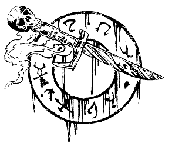

Vous apprenez alors que le Comte est le dernier descendant de la lignée des Brume. Son domaine s'étend à des kilomètres à la ronde. A une époque, ce domaine était prospère : de nombreux métayers le cultivaient et son revenu était confortable, jusqu'à ce jour néfaste qui fut témoin de la mort de sa sœur, survenue dans des circonstances bizarres. Alors qu'elle n'était âgée que de trente-deux ans, elle fut retrouvée, sans vie, dans une clairière de la forêt, le cou portant des marques étranges. La nouvelle de ce drame se répandit vite et, dans leur ignorance, les paysans eurent vite fait de propager des histoires de sorcellerie et de magie noire. Bientôt le Manoir devint un lieu maudit. Tout cela était à mettre au compte de la superstition et de la stupidité, bien entendu, mais pourtant, peu à peu, les fermiers désertèrent le domaine.
Le repas est depuis longtemps terminé lorsque le Comte achève son récit. Franklin vous propose maintenant des fruits, du fromage, et du café accompagné de cognac. Allez-vous choisir :
Un fruit, du café et du cognac ?
Du fromage, du café et du cognac ?
